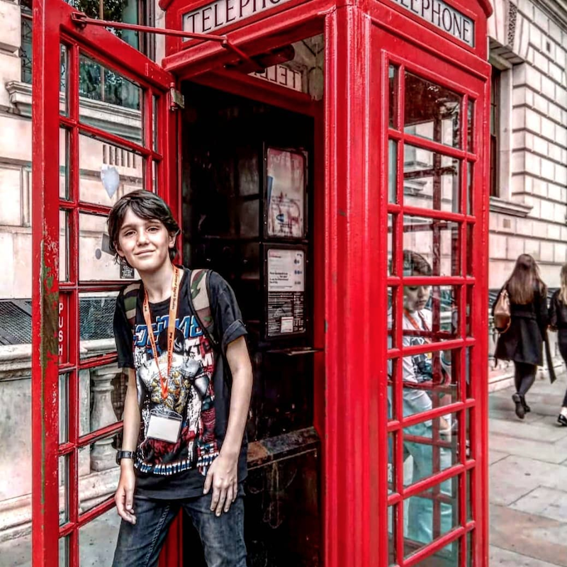
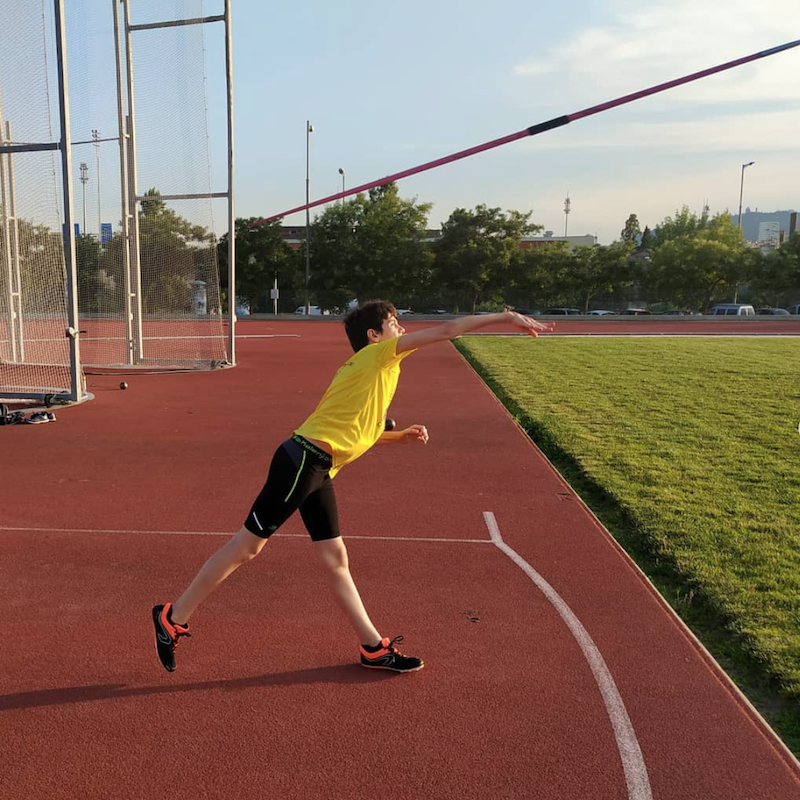
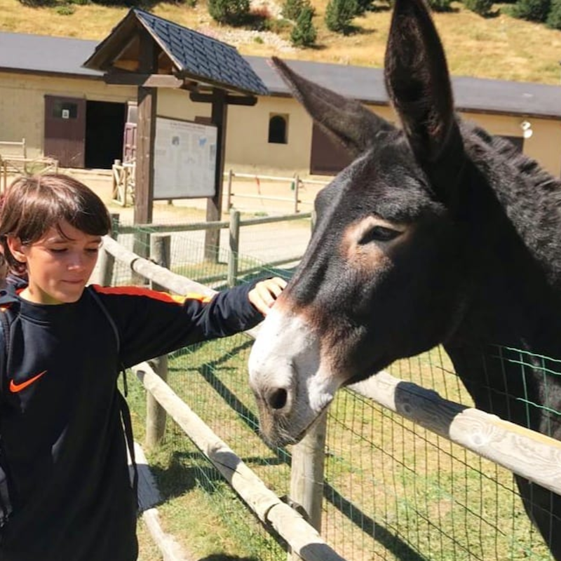
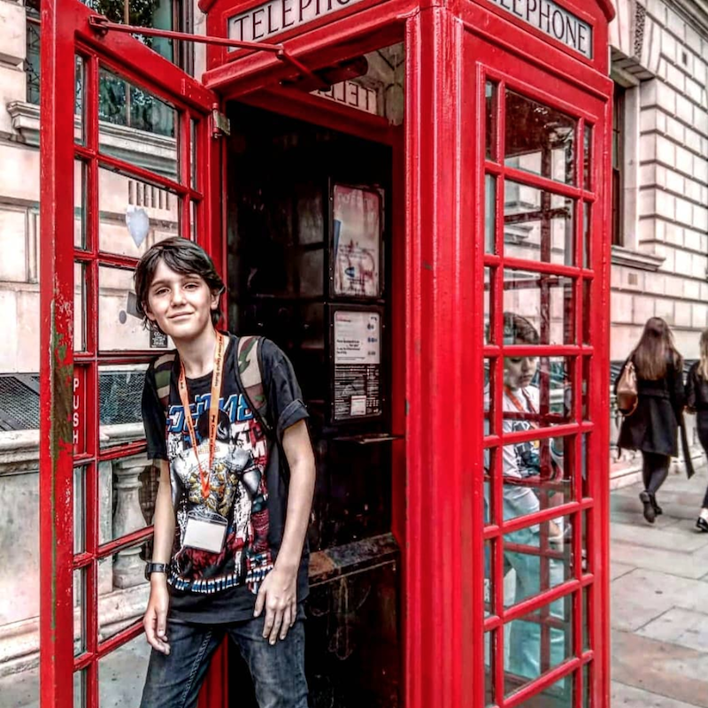
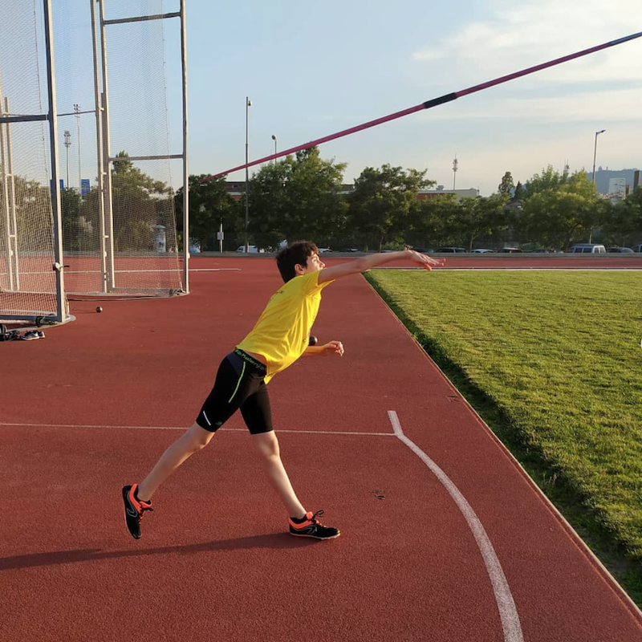
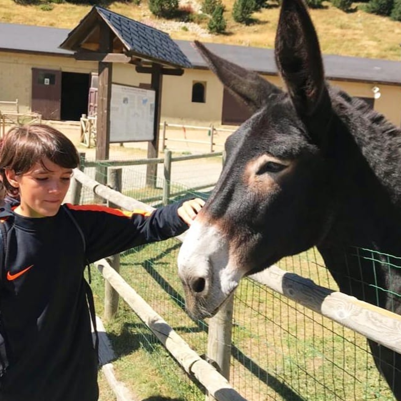

Javelin_90m, the javelin front page of internet
Posts, videos and blogs to get into the javelin world and have a great time learning new things.
About the site
This site is a meeting point for javelin throwers. Personally, I don't have much knowledge of javelin, but I do my best to make my content trustworthy and entertain people.
 





Hechale un vistazo a mis proyectos
Proyectos de todo tipo, tanto aplicaciones digitales como páginas de instagram i programación de sitios web
Mi último trabajo
Ahora mismo esta web es mi último trabajo. Como ya he explicado, me estoy formando en programación weby de momento mi proyecto es trabajar en esta web y aplicar lo que sé y lo que aprendo para mejorarla y que sea una muestra de mi trabajo. Si te interesa saber que editor de texto uso o que herramientas compplementarias uso lo tendreis todo en el apartado de proyectos. Para evolucionar en este proyecto estoy usando el tutorial de CSS de Soy Dalto que te animo a que veas. Sín más te dejo seguir navegando por mi web y no olvides que si hay algo que no funciona o no se ve del todo bien es porque aún estoy en fase de aprendizaje y esta web es mi protecto más ambicioso.
Contacta conmigo
Ante cualquier duda o cosa que quieras expresarme no dudes en ponerte en contacto conmigo mediante las formas que te ofrezco
Formas de contactarme
Quizás en tu visita a mi web hayas tenido la necesidad de contactarme por que tienes alguna duda o sugerencia. En ese caso que sepas que puedes contactarme tanto por mail como por instagram y te responderé lo más rápido que pueda. Para encontrar la imformación de contacto entra la pestaña de redes sociales y encontrarás tantto mi mail como mi instagram y ya podrás contactarme. Recuerda, disfruta de la web y pregunta lo que quieras!